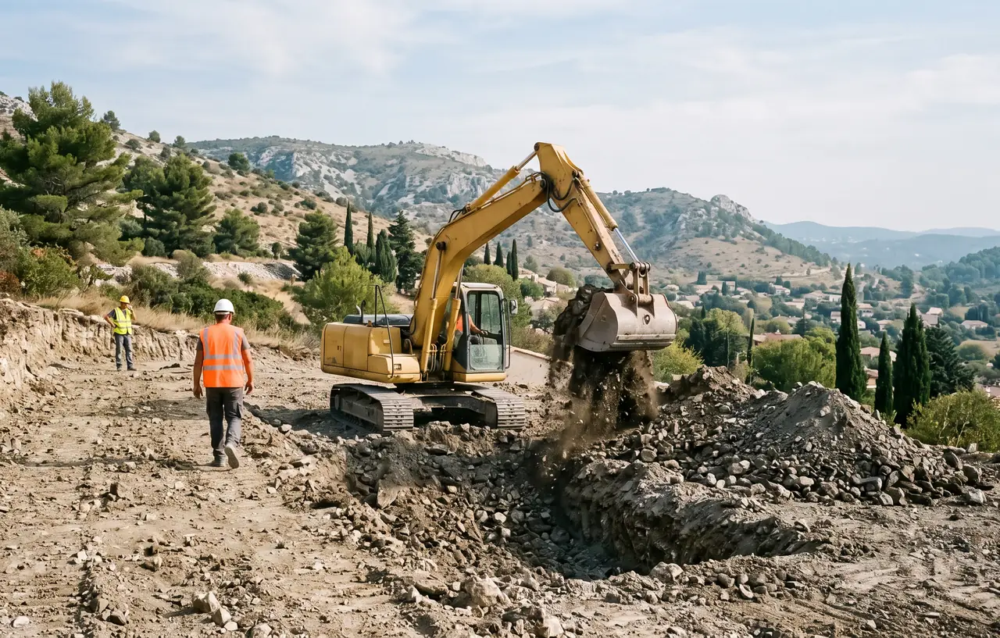
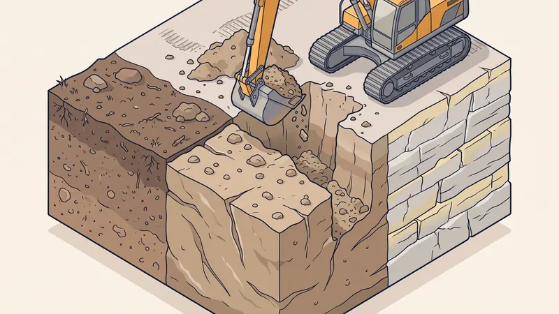

Prix Terrassement au m² en 2027 : Tarifs & Guide Complet
Devis gratuit sous 24 h 07 45 14 20 49 WhatsAppNotre service : terrassement
En bref
- Quel est le prix moyen d'un terrassement au m² en 2027 ? Le prix moyen d'un terrassement se situe entre 25 et 60 euros le m² en 2027, selon la nature du sol, la profondeur d'excavation et l'accessibilité du terrain.
- Quels facteurs influencent le coût d'un terrassement ? Les principaux facteurs sont : la nature du sol (meuble, argileux, rocheux), la surface et la profondeur à terrasser, l'accessibilité du chantier, l'évacuation des terres, la pente du terrain et la nécessité d'un brise-roche hydraulique.
- Le terrassement est-il plus cher en Provence ? Oui, les sols calcaires et rocheux typiques de la région Aix-en-Provence et PACA nécessitent souvent l'utilisation d'un brise-roche hydraulique, ce qui augmente le coût de 20 à 40 % par rapport à un terrain meuble.
Vous envisagez des travaux de terrassement pour la construction de votre maison, votre piscine ou l'aménagement de votre terrain ? Comprendre les prix du terrassement au m² est essentiel pour bien budgétiser votre projet. Dans ce guide complet, nous détaillons les tarifs pratiqués en 2027 dans la région d'Aix-en-Provence et en PACA, les facteurs qui influencent le coût et nos conseils pour maîtriser votre budget.

Sommaire
- Les prix moyens du terrassement au m² en 2027
- Facteurs qui influencent le prix du terrassement
- Prix du terrassement par type de projet
- Prix du terrassement en région PACA
- Comment réduire le coût de son terrassement ?
- Les étapes d'un chantier de terrassement
- FAQ : Vos questions sur le prix du terrassement
- Les erreurs courantes à éviter
- Questions fréquentes
- Pourquoi faire appel à un pro comme STP Terrassement
Les prix moyens du terrassement au m² en 2027
Le coût d'un terrassement varie considérablement en fonction de la nature du projet. Voici les fourchettes de prix constatées en 2027 pour la région Provence-Alpes-Côte d'Azur :
Selon la nature du sol, comptez 25 à 90 €/m² pour un terrassement en 2027 : 25 à 40 €/m² sur un terrain plat en terre franche, 35 à 55 €/m² sur un terrain en pente, et 50 à 90 €/m² en sol rocheux nécessitant un brise-roche.
| Type de terrassement | Prix au m² (HT) | Prix au m³ (HT) |
|---|---|---|
| Terrassement terrain plat (sol meuble) | 25 - 40 €/m² | 20 - 35 €/m³ |
| Terrassement terrain en pente | 35 - 55 €/m² | 30 - 50 €/m³ |
| Terrassement sol rocheux | 50 - 90 €/m² | 45 - 80 €/m³ |
| Décaissement / mise à niveau | 15 - 30 €/m² | 18 - 35 €/m³ |
| Terrassement fondations maison | 30 - 60 €/m² | 25 - 55 €/m³ |
| Terrassement piscine | 40 - 70 €/m² | 35 - 65 €/m³ |
| Remblaiement | 10 - 20 €/m² | 15 - 25 €/m³ |
Tous nos prix de référence, poste par poste, sont regroupés dans la grille tarifaire terrassement 2027.
Ces tarifs incluent généralement la main-d'oeuvre et l'utilisation des engins de chantier (pelle mécanique, mini-pelle, chargeuse). L'évacuation des terres représente un coût supplémentaire de 25 à 60 €/m³ selon la distance de la décharge, chargement, camion et redevance ISDI compris.

Facteurs qui influencent le prix du terrassement
1. La nature du sol
C'est le facteur principal qui détermine le coût de vos travaux de terrassement. En région PACA, et particulièrement autour d'Aix-en-Provence, les sols sont souvent calcaires et rocailleux, ce qui nécessite l'utilisation d'un brise-roche hydraulique (BRH). Ce type d'intervention augmente le prix de 20 à 40 % par rapport à un sol meuble classique.
- Sol meuble (terre végétale, sable) : le plus économique, excavation rapide
- Sol argileux : difficulté intermédiaire, risque de gonflement en période humide
- Sol calcaire : fréquent en Provence, nécessite des engins plus puissants
- Sol rocheux : le plus coûteux, utilisation de BRH ou de micro-minage
2. L'accessibilité du terrain
Un chantier difficile d'accès (rues étroites, terrain enclavé, pente importante) entraîne une majoration de 10 à 25 % sur le devis. L'impossibilité de faire entrer une pelle mécanique standard peut imposer l'usage d'une mini-pelle, plus lente mais plus maniable, ce qui allonge la durée du chantier. La création d'une desserte privée se chiffre au mètre linéaire : voyez notre guide sur le prix d'un chemin d'accès carrossable.
3. La profondeur d'excavation
Plus les fouilles sont profondes, plus le volume de terre à extraire et à évacuer est important. Pour des fondations de maison, comptez entre 60 et 120 cm de profondeur. Pour un terrassement de piscine, la profondeur atteint souvent 1,50 à 2,50 m.
4. Le volume de terre à évacuer
L'évacuation des déblais représente un poste de dépense important. Le coût de transport dépend de la distance entre le chantier et la décharge agréée. En région Aix-en-Provence, comptez en moyenne :
| Distance décharge | Prix évacuation par m³ |
|---|---|
| Moins de 10 km | 25 - 35 €/m³ |
| 10 à 25 km | 30 - 45 €/m³ |
| Plus de 25 km | 40 - 60 €/m³ |
5. La surface et le volume du chantier
Un chantier de grande envergure bénéficie d'un effet d'échelle : le prix unitaire au m² diminue à mesure que la surface augmente. Pour un petit terrassement de moins de 50 m², le coût unitaire sera plus élevé en raison des frais fixes (transport d'engins, installation de chantier).
Prix du terrassement par type de projet
Terrassement pour construction de maison
Le terrassement d'un terrain pour la construction d'une maison individuelle comprend plusieurs étapes : le décapage de la terre végétale, le nivellement, les fouilles pour les fondations et le remblaiement. Pour une maison de 100 m² d'emprise au sol, le budget moyen se situe entre 5 000 et 15 000 euros, selon la complexité du terrain. Le remblaiement obéit à sa propre logique de prix, détaillée dans notre guide sur le prix du remblai de terrain.
Terrassement de piscine
Le terrassement pour une piscine nécessite une excavation précise aux dimensions du bassin. Pour une piscine standard de 8 x 4 m avec une profondeur de 1,50 m, le coût du terrassement varie entre 2 500 et 5 000 euros. En sol rocheux, le surcoût atteint 40 à 80 €/m³, soit 1,5 à 2,5 fois ce forfait (+ 2 500 à 6 000 € pour un bassin de 8 x 4 m).
Terrassement pour allée et voie d'accès
La préparation du terrain pour la pose d'un enrobé ou de pavés comprend le décaissement, la mise en forme et le compactage du fond de forme. Comptez entre 25 et 45 €/m² pour ce type de prestation.
Viabilisation de terrain
La viabilisation d'un terrain inclut le creusement de tranchées pour les réseaux (eau, électricité, tout-à-l'égout, télécommunications). Ce type de terrassement en tranchée coûte entre 25 et 35 €/ml en terre ordinaire (0,80 m de profondeur) et 40 à 70 €/ml en sol calcaire ou rocheux.
Prix du terrassement en région PACA
La région Provence-Alpes-Côte d'Azur présente des spécificités qui impactent le prix du terrassement :
- Sols calcaires et rocheux : très fréquents autour d'Aix-en-Provence, Marseille, Toulon et dans l'arrière-pays
- Terrains en pente : le relief provençal impose souvent des travaux de nivellement importants
- Réglementation stricte : zones protégées, PLU contraignant, périmètres ABF près des monuments historiques
- Conditions climatiques : les périodes de sécheresse durcissent les sols argileux, rendant le terrassement plus difficile
| Ville / Zone PACA | Prix moyen terrassement (€/m²) |
|---|---|
| Aix-en-Provence | 35 - 65 €/m² |
| Marseille et environs | 30 - 60 €/m² |
| Toulon / Var | 30 - 55 €/m² |
| Avignon / Vaucluse | 25 - 50 €/m² |
| Nice / Alpes-Maritimes | 35 - 70 €/m² |
Comment réduire le coût de son terrassement ?
Voici nos conseils professionnels pour optimiser votre budget terrassement :
- Faites réaliser une étude de sol (étude géotechnique G1/G2) avant les travaux pour anticiper les surcoûts liés à un sol difficile
- Planifiez en période creuse : les tarifs sont souvent plus avantageux en automne et en hiver
- Regroupez les travaux : combinez terrassement, raccordement tout-à-l'égout et viabilisation pour mutualiser les frais de déplacement
- Réutilisez les déblais : si les terres extraites sont de bonne qualité, utilisez-les pour le remblaiement ou le modelage du jardin
- Comparez les devis : demandez au minimum 3 devis détaillés auprès de terrassiers professionnels
Obtenez Votre Devis Terrassement Gratuit
Chez STP Terrassement, nous intervenons à Aix-en-Provence et dans toute la région PACA. Nos devis sont détaillés, transparents et sans engagement.
Pressé ? 07 45 14 20 49 ou WhatsApp
Les étapes d'un chantier de terrassement
Un chantier de terrassement professionnel se déroule en plusieurs phases :
- Étude préalable et piquetage : implantation du projet par un géomètre, définition des niveaux
- Décapage de la terre végétale : retrait de la couche superficielle (15 à 30 cm) pour atteindre le sol porteur
- Excavation et fouilles : creusement aux dimensions et profondeurs requises
- Évacuation des déblais : transport vers une décharge agréée ou stockage sur site
- Nivellement et compactage : mise à niveau du fond de fouille et compactage au rouleau vibrant
- Drainage et assainissement : pose de drains et raccordement aux réseaux si nécessaire
- Remblaiement : apport de matériaux de remblai (grave, tout-venant) et compactage par couches
FAQ : Vos questions sur le prix du terrassement
Quel est le prix moyen d'un terrassement au m² en 2027 ?
Le prix moyen d'un terrassement se situe entre 25 et 60 euros le m² en 2027, selon la nature du sol, la profondeur d'excavation et l'accessibilité du terrain. En région PACA, les tarifs peuvent varier de 30 à 70 €/m² en raison des sols calcaires et rocailleux.
Quels facteurs influencent le coût d'un terrassement ?
Les principaux facteurs sont : la nature du sol (meuble, argileux, rocheux), la surface et la profondeur à terrasser, l'accessibilité du chantier, l'évacuation des terres, la pente du terrain et la nécessité d'un brise-roche hydraulique.
Le terrassement est-il plus cher en Provence ?
Oui, les sols calcaires et rocheux typiques de la région Aix-en-Provence et PACA nécessitent souvent l'utilisation d'un brise-roche hydraulique, ce qui augmente le coût de 20 à 40 % par rapport à un terrain meuble.
Peut-on réduire le coût de son terrassement ?
Pour réduire les coûts : planifiez les travaux en période creuse (automne/hiver), regroupez plusieurs interventions, réutilisez les déblais sur place quand possible et demandez plusieurs devis pour comparer les tarifs.
Pour vérifier les règles applicables : la carte des risques de votre parcelle, dont le retrait-gonflement des argiles, sur Géorisques et le guichet des déclarations de travaux à proximité des réseaux (DT-DICT).